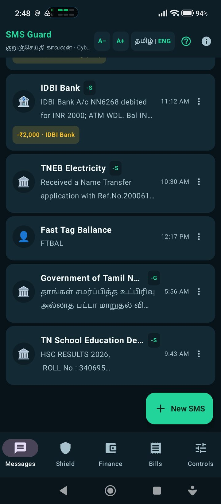
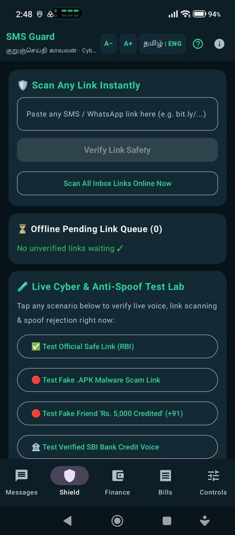
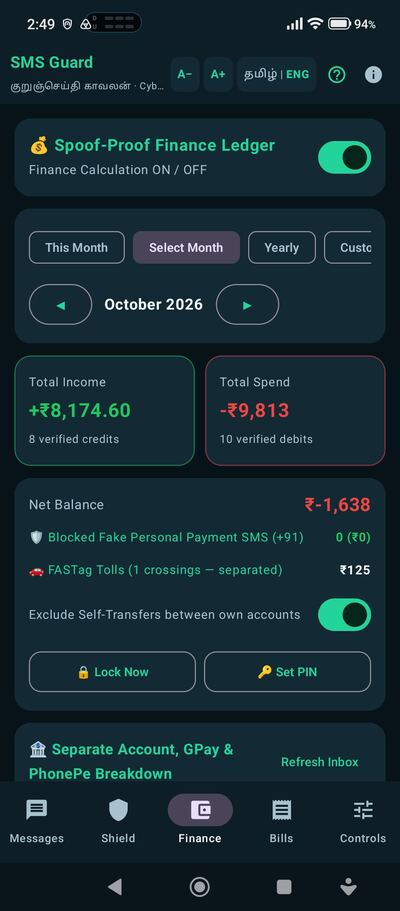
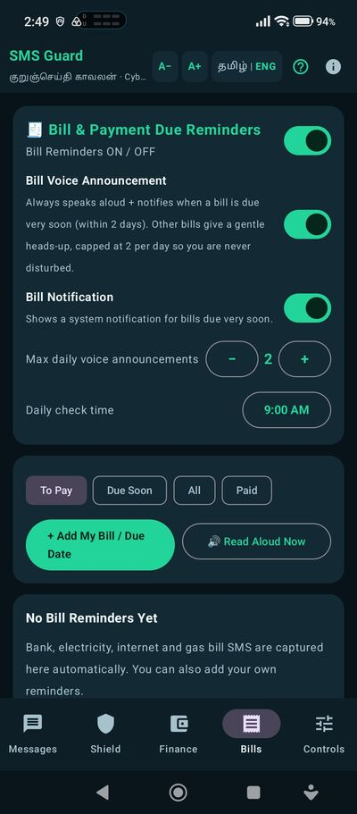
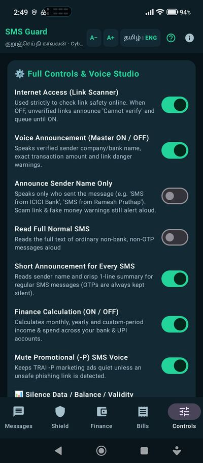
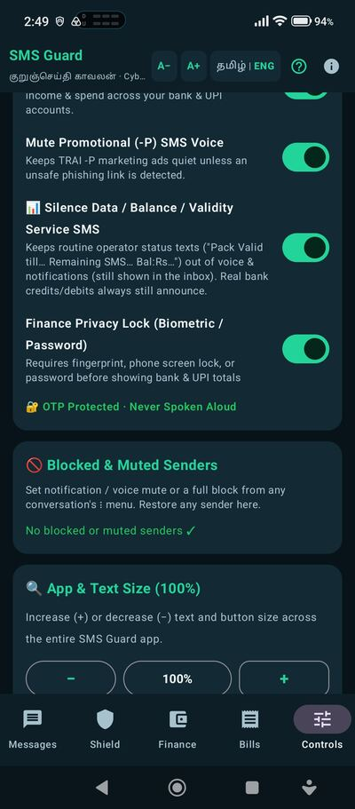
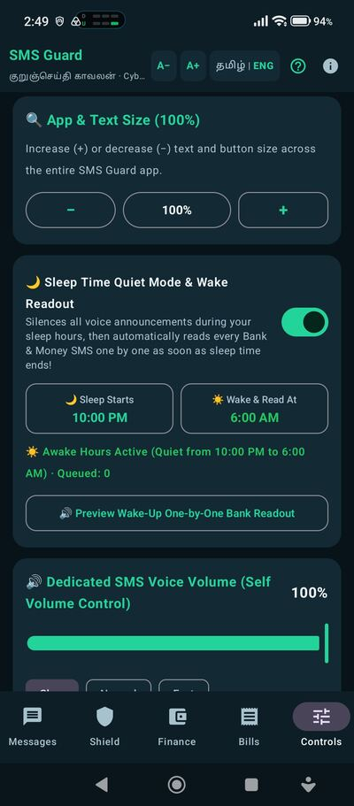
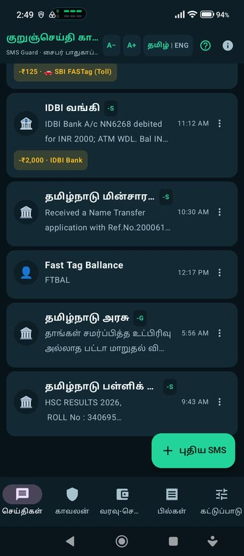
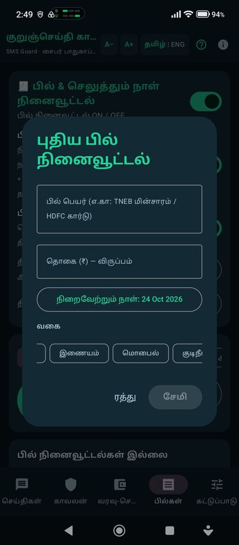

🛡️SMS Guard (குறுஞ்செய்தி காவலன்)
v1.1.6 · Android 8.0+Reads every SMS aloud in Tamil or English and blocks scam & phishing links — while never speaking your OTP or bank numbers.
SMS-ஐ தமிழ்/ஆங்கிலத்தில் சத்தமாக படித்து, போலி இணைப்புகளைத் தடுக்கும்; OTP & வங்கி எண்கள் ஒருபோதும் சொல்லப்படாது; பில் நினைவூட்டலுடன்.

📸 View 8 more screenshots · மேலும் 8 படங்கள்








Full features · முழு விவரங்கள்
- Green-tick / red link shield (NextDNS, AdGuard & Cloudflare 1.1.1.2 compatible) that inspects every link on-device and blocks
.apkmalware, brand-lookalikes and scam job traps. - Instant voice auto-stop the moment you turn the screen ON, plus a compact global
⏹ Stoppill on every window. - Newest messages always at the top across threads & history; full readout for Government,
TNEPDSRation,TNSEDUExam Results, utilities & non-OTP SMS. - 6 studio neural voices (3 male + 3 female, Tamil & English) with automatic daily male↔female rotation and instant offline fallback to your phone's TTS.
- 100% OTP silence — one-time codes and bank account digits are never spoken.
- Sleep / quiet-hours schedule with a sequential wake-up readout.
- Spoof-proof Bank / Card / UPI / FASTag ledger (rejects fake
+91payment SMS) locked by fingerprint / screen-lock / PIN. - Bills tab: automatic bill-SMS capture + your own due-date reminders with voice & notification alerts.
Benefits · உங்களுக்கு என்ன நன்மை
- Blocks scam & phishing SMS and dangerous links before you tap — protects your money.
- Reads any SMS aloud instantly (bank, Govt / TNEPDS Ration, exam, delivery) without opening it.
- Never speaks OTP codes — your accounts stay safe even in a crowded place.
- Bills tab auto-captures bill SMS and reminds you before the due date; biometric-locked ledger.
ஒரு தொடுதலிலேயே மோசடி / ஃபிஷிங் SMS-ஐத் தடுக்கும்; வங்கி, அரசு / ரேஷன், தேர்வு SMS-ஐ திறக்காமலே சத்தமாக படிக்கும்; OTP-ஐ ஒருபோதும் படிக்காது.
Privacy & security · பாதுகாப்பு
- 100% open source — every line is public on GitHub for anyone to audit.
- No ads · no tracking · no analytics · no account — ever.
- Verified in-app updater checks URL, size, SHA-256 and app signer before installing.
- Your SMS is read on your phone only — nothing is uploaded anywhere.
முழுமையாக open-source; விளம்பரமோ கண்காணிப்போ இல்லை; SMS உங்கள் போனிலேயே இருக்கும், எங்கும் அனுப்பப்படாது.
What's new · இந்த வெளியீட்டில் புதிதாக என்ன
- New monthly-spend card on the Finance (நிதி) tab: this month against last month, the change in rupees and percent, your running daily average, what the month is projected to end at, the days left, and a plain-language trend.
- The month is measured to its last instant, not to midnight on the last day, so the projection is never a day short.
- When last month had no spending at all, the percent change is left out instead of showing a meaningless number.
- Bilingual card, same style as the rest of the Finance tab. OTP silence is unchanged.
நிதித் தாவலில் புதிய மாதாந்திர செலவு அட்டை — இந்த மாதம் மற்றும் கடந்த மாதம் ஒப்பீடு, ரூபாயிலும் சதவீதத்திலும் மாற்றம், நாள் வரியான சராசரி, மாத இறுதியில் எதிர்பார்க்கும் செலவு, மீதமுள்ள நாட்கள், எளிய மொழியில் உள்ள பிரவணம். மாதம் கடந்த நாள் நள்ளிரவில் அல்ல, நாள் இறுதியில் முடுகிறது. OTP ஒலிக்கப்படாதது உறுதி.
Not phone-tested: this exact build was not installed on a phone before publication and no device result is claimed for it. Every CI unit, lint, regression, signature and release-asset check passed.
இந்த துல்லியமான கோப்புகள் வெளியிடுவதற்கு முன் ஃபோனில் நிறுவப்படவில்லை; சாதன சோதனை எதுவும் உரையாற் படவில்லை. CI சோதனைகள் அனைத்தும் வெற்றி.